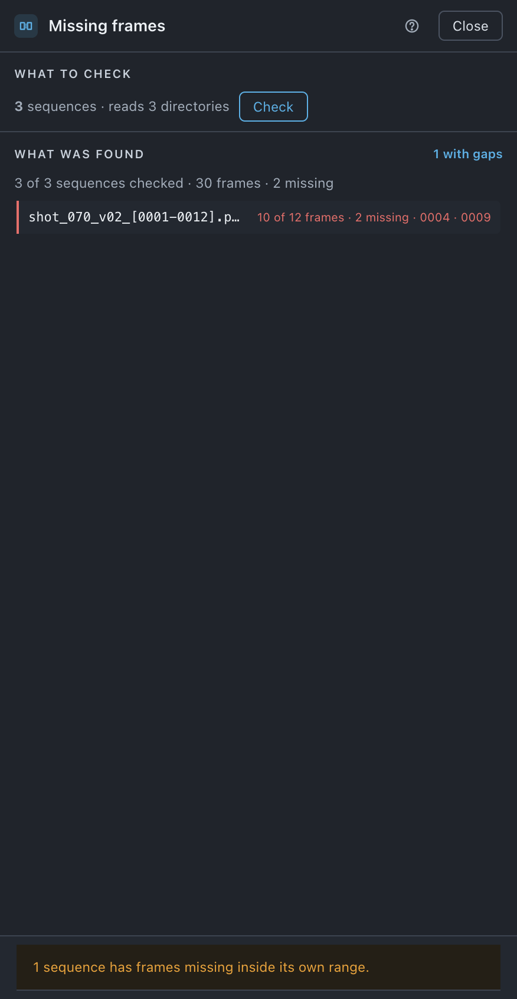

Missing frames
Reads the directory behind every image sequence in the project and reports the runs with holes in them. It changes nothing.
Use it when
- A render came back from the farm and you want to know it is complete before you build on it.
- A comp holds one frame longer than it should and nothing in the timeline explains it.
- A copy off a server was interrupted and you are not sure what arrived.
- You are archiving a job and want to know the sequences in it are whole.
What it does
Lists every image sequence the project uses, reads each one's directory, and compares what is on disk against the run's own span — its first frame number to its last. A run that starts at 0001 and ends at 0120 with 118 files in it is missing two, and the sheet names which numbers are absent. It is read-only: nothing is repointed, written or repaired, and the only button is Close.
What it does not do: it does not invent a length. Nothing on disk says how long a render was meant to be, so a run that stops short at the end reads as whole — only holes inside the run's own range are gaps. It does not walk a tree either; it reads one directory per sequence directory and no more.
Do it
- Press the Missing frames tile. The top band says how many sequences are in the project and how many directories checking them would read.
- Press Check. Nothing is read until you do.
- Watch the bar — n of n directories read, with the directory it is on. Stop ends it.
- Read the rows. Only problems are drawn; a sequence with nothing wrong does not take a line.
- Press Close. There is nothing to apply.
Scope. Every image sequence in the project. There is no selection scope and no directory to choose. The same sequence imported twice is one row, because it is one question.

What you'll see
| Option | What it means |
|---|---|
| Check | Starts the read, and becomes Stop while it runs. Dim when the project holds no image sequences. Closing the sheet stops the read as well. |
| The count line | n of n sequences checked · n frames · n missing. The first number is what was actually checked, which is not the same as how many there are — a directory that would not open is not a pass. |
| A gap row | 118 of 120 frames · 2 missing · 0043 · 0044 — the numbers that are absent, up to six of them, then +n. A very long run states the count but not the list rather than guessing at it. |
| only one file of this run is on disk | The project holds it as a sequence and one frame is all that is there. |
| the frame this points at is not in the directory | The directory read fine; the frame the project names is not in it. |
| the project cannot find this footage — relink it first | Missing footage. Relink before this can say anything. |
| the directory could not be read / the directory was not read | A refusal or a stopped run. It is a row, never a silence. |
Notes it may raise, and what they mean:
- n sequences have frames missing inside their own ranges. After Effects renders a gap as a held frame, so nothing here is broken — it is just short.
- n sequences could not be checked — a directory would not open. That is not the same as being complete.
- stopped — this is a partial answer, and every directory not reached is a row below
- no missing frames · nothing was checked · no image sequences in this project
Undo
Nothing to undo. It reads directories and reports what it found; the project is not touched.
Watch out
Things you might not think to do
- Check before you archive. A gap found now is a re-render; a gap found in two years is a hole.
- Check what a mounted server actually delivered. The read goes through the same bridge every other directory read uses, so a volume the fast reader cannot see is still read — see Settings › Searching.
- Run it after an update. Update assets warns about gaps in the run it is about to repoint you to; this is where you look at every sequence in the project at once.
Pairs with
Relink first, for anything the project cannot find. Update assets raises the same finding on the one run it is about to point you at.